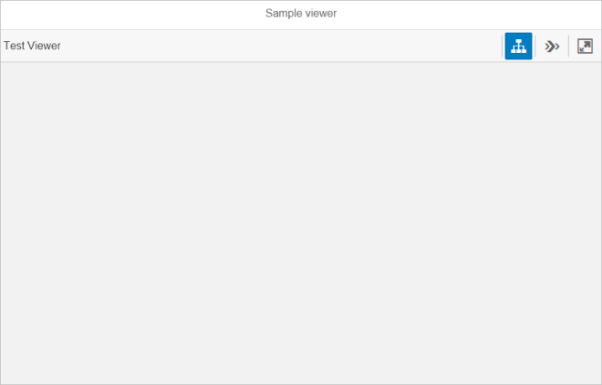
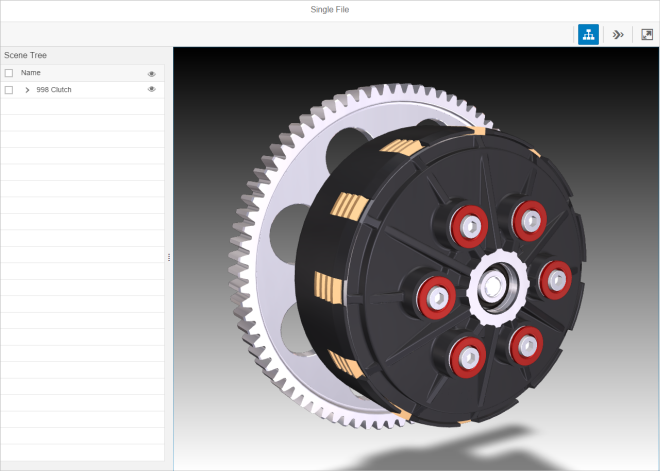

sap.ui.vk.Viewer in
the API Reference in the Demo KitThe Viewer (sap.ui.vk.Viewer) control is intended to help
application developers include simple 3D visualisation capability in their
application by connecting, configuring and presenting the essential Visual
Interaction toolkit (sap.ui.vk) controls into a single, composite
control.
Most applications require the simplest possible visualisation capability, which includes the loading of a single file into the application, and the initialisation of a 3D Viewport. Consumers of such an application also expect to be able to pan, zoom, or rotate (if applicable) the scene, as well as receive visual cues when they select an object in the 3D Viewport. The Viewer control aims to make it as easy as possible for an application developer to include 3D visualisation capability by connecting, configuring and presenting some of the core Visual Interaction toolkit controls into a single, composite control.
.vds) format to be able to display them in the
Viewer.The following figure shows the default Viewer layout after it is initialized:
The following figure shows the Viewer layout with a file loaded and all available controls enabled and visible:
By default, instances of the Toolbar, Scene Tree, and Step Navigation controls are created after a Viewer is initialized. You can change the following Viewer properties so that instances of these features are not created/dislayed:
enableSceneTreeenableStepNavigationenableToolbar'Disabling' the Toolbar will result in no Toolbar being shown in the application.
If the Toolbar feature is enabled, 'disabling' the Scene Tree or Step Navigation feature will result in their respective toolbar buttons being grayed out.
.vds) format.